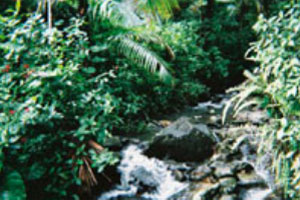
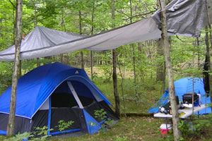
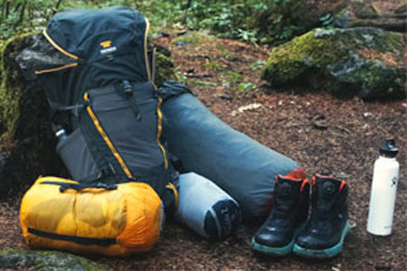
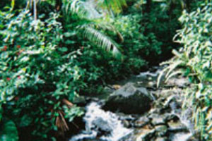
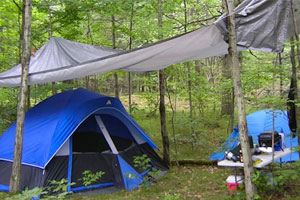
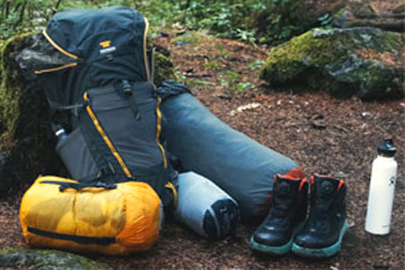
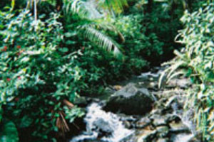
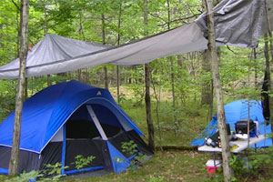
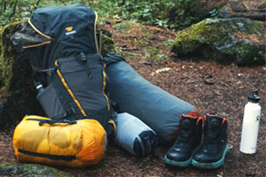

Wilderness travel is a popular pastime. However, there are many hazrds and other factors that can effect the outcome of a trip. This website covers several topics related to wilderness travel including climate, health hazards, preperation and more! We hope you enjoy this website and safe travels!


